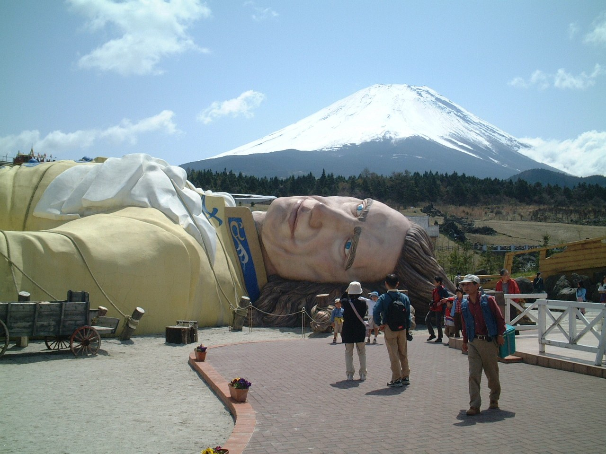

If a theme park is a space created for people to gather, experience a spectacle, and dream a collective dream, then nation-states have long been theme parks. In this regard, the modern nation-state known as Japan has been a theme park par excellence, jammed with architecture derivative of elsewhere and complete with a mythos as constructive and destructive as other major “theme parks” around the globe, world powers such as the United States, Germany, China, Great Britain, Russia, and France. In particular, dreams about Japan by both Japanese and those residing beyond its borders have been bleak and fecund harbingers for the continual laying waste and rebuilding that have become part of the modern history of Japan. Just as the Meiji era (1868-1912) had simultaneously confirmed and burst some of the wild speculations of a Western/European fetish for what had long seemed an untouchable and “closed” country and also enabled the movers and shakers of late nineteenth century Japan to imagine a new country, the bubble economy of 1980s Japan both encouraged Euro-American fears of the second coming of Asian power and allowed for new dreams of an anomalous country.
Though bubble and post-bubble Japan can now be seen as a product of that most dream-like and virtual of worlds—financial and real estate speculation, that Japan (which was touted as a powerful, postmodern juggernaut) created new and fantastic spaces of vertiginous possibilities and constructed unreal pasts from fragmentary and fictional sources. The national economic virtual reality also spawned a number of real, extraordinary theme parks: Huis ten Bosch—a resort that recreates the experience of seventeenth century Dutch traders limited to inhabiting the island of Dejima in the bay of Nagasaki; The Hawaiians—a waterpark and health spa modeled on the Hawaiian luau; Tokyo DisneySea—a unique colony of the Disney empire targeted at young lovers; Tobu World Square—a replication of major UNESCO heritage sites marketed as global tourism; Edo Village—an entirely newly fabricated town based on an historical, early modern plan and pitched as a time machine; and, finally, Gulliver’s Kingdom at Fuji—a park that recreates many of the voyages of Jonathan Swift’s famed character with one notable exception: Gulliver’s travel to Japan.
On windswept plains under the austere backdrop of the holy Mount Fuji lies a forty-five meter effigy of a fallen, fictional, giant European tied to the ground and covered in graffiti. In previous decades a different kind of myth-making had taken place near this spot: famous actors, donning samurai garb, positioning themselves with steely eyes for the cinemascope lenses of Kurosawa and Kobayashi. Today, it is derelict. Gulliver’s Kingdom at Fuji opened on this formerly state-owned land on July 26, 1997, but it suffered from its inconvenient location and competition from another nearby (yet more conveniently located) amusement park, Fuji Q Highland. Despite efforts to rejuvenate the 370,000 square meter space as a reindeer petting ranch, Gulliver’s Kingdom fell into bankruptcy in 1999 and was used in 2004 as a dog run before being entirely abandoned. If in post-bubble Japan, the abandoned statue of the supine, quasi-fictional Lemuel Gulliver renders the plains of Yamanashi prefecture and, indeed, all of Japan into a Lilliput with an old spoil (a deteriorating European), it will not have been the first time the Japanese nation was bound to the corpse of European fantasy.
As long ago as 1726, with the first complete publication of Swift’s tale of a traveling surgeon, Japan has been featured as an intermediary, transitional, and translational zone between the real world and imaginary nations. In particular, images of Japan in Gulliver’s Travels (hereafter Gulliver’s) provide a clear view of the nature of verisimilitude and virtuality as it was toyed with by Swift in 1726 and transported to Japan in the early twentieth century. Like Fredric Jameson’s famed readings of Los Angeles hotels and, since then, the off-hand remarks of countless academics who have revealed to amazed North American undergrads how their own universities were themselves spaces of virtuality, referencing (as Disney’s castle mimics Neuschwanstein) Oxford and Cambridge, which themselves referenced older institutions of higher learning in continental Europe (and so on), the theme park at the base of Fuji performs, with a complete lack of ironic self-awareness, a truth of the deflated nation state—that Japan is nothing more than a fantastical Lilliput in comparison to the ever-diminishing empires of Europe. But this performance of the theme park differs in two significant ways from derivatives of real originals extant in the world: first, the theme park is not mimetic to some vanished real of the past or to some distant real contemporaneous space, but to a fiction; second, this realization of the fiction overlooks the already virtualized space of “Japan” realized within the narrative of Gulliver’s itself.
In his work on utopias and futures, Jameson’s all-too-quick declaration on Gulliver’s is symptomatic of the common oversight that reads primarily Parts One (Lilliput) and Two (Brobdingnag), and occasionally Part Four (Houyhnhnms) as the sum of Gulliver’s travels; he writes:
Swift could only imagine a Utopian existence by populating it with non-human forms, which he nonetheless represented under the guise of earthly animals. … In much the same way, we must now spend time with the aliens before confronting Utopia directly.
Though it may be surprising that someone as attuned to the postmodern condition as Jameson would have missed the real country cast as a utopia and actually populated by humans in Swift’s Part Three, it is entirely in keeping with the general tendency of receptions of the narrative, which forget not only Japan, but also the important place of factuality in the tales: the book was for a time sold simply as Travels into Several Remote Nations of the World, in Four Parts by one Lemuel Gulliver. The virtuality of the Gulliver spread out at the foot of Mount Fuji is doubled and redoubled by the virtuality of the original hoax of Swift’s text first sold to the world not as Swift’s, but as that of Lemuel Gulliver, and by the virtual status of the place called “Japan” in the story itself. A handful of scholars have tracked the role of this Japan within the original text, but few have sought to understand the virtualization of Japan by outsiders and the self-virtualization of Japanese more broadly. One useful way to enter a discussion of this virtuality is through a consideration of what happens to Gulliver’s brief excursion through Japan in Japanese translations of Gulliver's Travels.
Theme Park Nation: Japan as Virtual Space
10/13/12
If Japan was a virtual space that enabled Dean Swift’s fiction bridging our world with his fantastical one, how did Japanese translators deal with their own virtualized space?
Gulliver in Japan
in Gulliver’s Japan
2012